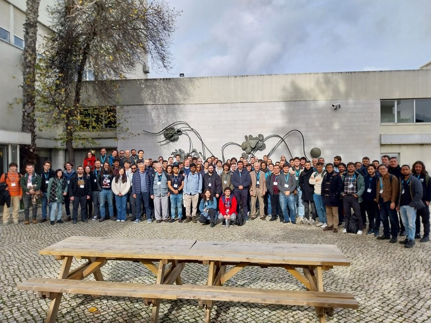

Spectral suppression of black hole ringdown tails
A new preprint led by Jose Antonio León Vega shows how the spectral structure of oscillatory perturbations can suppress the late-time power-law tails of black-hole ringdown signals.
View publicationShaping black hole resonances I. Black hole ringdown as a spectral filtering process
A new preprint led by Alejandro Svyatkovskyy Kholyavka develops a spectral-filtering description of quasinormal-mode excitation in black-hole ringdown.
View publicationImpact of the axion-like self-interactions in gravitational atoms for LISA
A new preprint led by Samuel Gómez Gómez explores how axion-like self-interactions in gravitational atoms could be constrained through gravitational-wave observations with LISA.
View publicationAxial Oscillations of Viscous Neutron Stars
A new preprint led by Sofía Bussières López studies the axial oscillation spectrum of viscous neutron stars and identifies new families of viscosity-driven modes.
View publication
Group members present ringdown research at the XVIII Black Holes Workshop
Xisco Jiménez Forteza and Alejandro Svyatkovskyy Kholyavka attended the meeting in Lisbon and presented complementary studies of black-hole ringdown using numerical relativity and numerical linear perturbation theory.
Read the full story